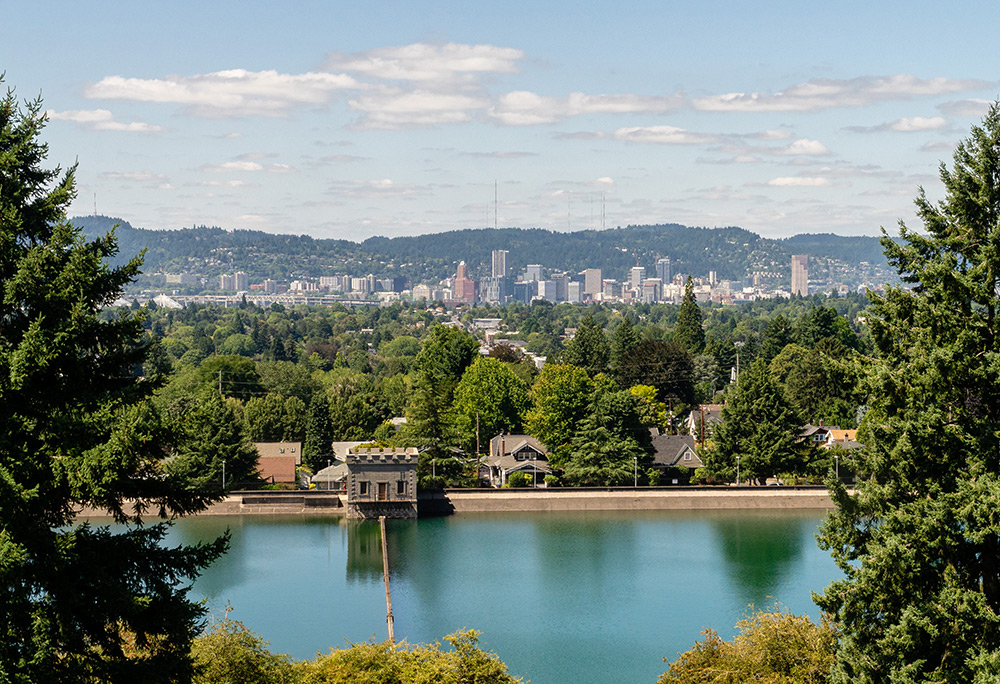

Mount Tabor
The View: Paved roads, staircases and trails form a network of pathways throughout the park, weaving through a forest of tall firs and wide open meadows. At the mountain’s summit, spectacular views across southeast Portland with the city skyline and West Hills in the distance.
The History: Mount Tabor is one of only four extinct volcanoes to lay within the limits of a major American city. Portland’s Mt. Tabor, a volcanic cinder cone, was named by Plympton Kelly, son of Oregon City pioneer resident Clinton Kelly, after Mt. Tabor in Israel, six miles east of Nazareth. In 1894, the city built two open reservoirs on the site (two other open reservoirs were built in 1911).